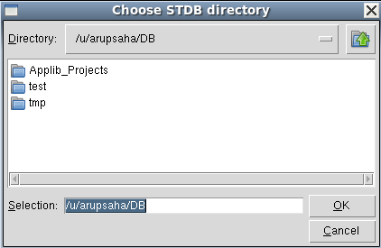
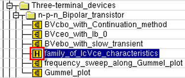
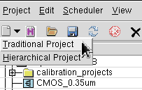
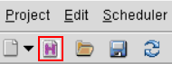
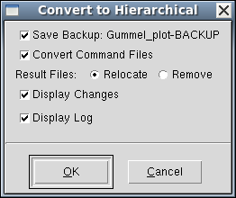

main menu
| module menu
| << previous section
| next section >>
main menu
| module menu
| << previous section
| next section >>
Sentaurus Workbench
1. Getting Started
1.1 Overview
1.2 Starting Sentaurus Workbench
1.3 Attaching Project Directories
1.4 Project Structure: Traditional and Hierarchical Organizations
Objectives
- To present an introduction to Sentaurus Workbench.
1.1 Overview
Sentaurus Workbench is the graphical front end that integrates TCAD Sentaurus simulation tools into one environment. Simulations are organized comprehensively into projects. Sentaurus Workbench automatically manages the information flow, which includes preprocessing user input files, parameterizing projects, setting up and executing tool instances, and visualizing results.
Sentaurus Workbench allows you to define parameters and variables to run comprehensive parametric analyses. The resulting data can be used with statistical and spreadsheet applications.
1.2 Starting Sentaurus Workbench
Before starting Sentaurus Workbench, you must set the STDB environment variable to any directory path where you have write access. You should specify a location with plenty of disk space.
In this module, the DB directory under your home directory will be used to set STDB. To create such a directory and to set STDB, use the following C shell commands:
mkdir /home/<your_login>/DB setenv STDB /home/<your_login>/DB
If you use the Bash shell, then use the commands:
mkdir /home/<your_login>/DB export STDB=/home/<your_login>/DB
To start Sentaurus Workbench, enter:
swb &
If STDB is not set, then you will be prompted at the beginning of a Sentaurus Workbench session to choose the STDB directory to be used for that session only (see Figure 1).

Figure 1. Choose STDB directory dialog box.
When Sentaurus Workbench is launched, it looks at the value of the STDB environment variable and displays the directory contents in the projects browser (Projects panel) (see Figure 2, blue box). In addition, the Applications_Library directory appears in the Projects panel (see Figure 2, red box).
{kind=link}
Figure 2. Main window of Sentaurus Workbench. (Click image for full-size view.)
The Applications_Library directory contains many projects that illustrate how to use Sentaurus tools including the projects used in this tutorial.
The Sentaurus Applications Library package can be downloaded and installed with Sentaurus binaries by the person administering the software installation.
Valid Sentaurus Workbench projects have the or icon preceding the name of a project with traditional or hierarchical organization, respectively. The color of the icon indicates the status of the project.
1.3 Attaching Project Directories
In addition to displaying the projects in the $STDB directory, projects located elsewhere can be attached, that is, displayed as read-only projects in the projects browser.
To attach a project directory:
- Choose Edit > Attach Root.
- Select a project directory.
This procedure can be repeated to attach up to five project directories. You cannot execute projects under any attached directories (roots). These projects must first be copied to a directory under the $STDB directory.
To detach a project directory:
- Select a project directory.
- Choose Edit > Detach Root.
Only attached directories can be detached. The projects in the $STDB directory cannot be detached, but they can be deleted permanently.
When exiting Sentaurus Workbench, all attached directories are detached automatically.
To ensure directories are always attached:
- Choose Edit > Preferences, or press the F12 key.
- In the SWB Preferences dialog box, expand Miscellaneous > Attached Roots on Start Up.
- Double-click one the Root directories.
- In the Choose Directory dialog box, navigate to the required directory, and click OK.
- When you have finished specifying all the required directories, click Apply.
1.4 Project Structure: Traditional and Hierarchical Organizations
If you are a new user of TCAD Sentaurus tools, then omit this section and return to it when you become familiar with tool usage.
Sentaurus Workbench supports two different project organizations:
- Traditional, where all project data is placed in one directory
- Hierarchical, where core project files, and simulation results are separated
While the traditional project organization is very simple and easy to use, it has limitations when working with large projects. With the growing number of splits, resulting in hundreds or thousands of experiments, Sentaurus Workbench starts to slow down on specific tasks, such as copying, pasting, and deleting experiments, as well as cleaning up nodes or the entire project. Another issue with the traditional project organization is that the simulation tree renumbering leads to the loss of results.
The hierarchical project organization addresses these limitations. It separates the core project files (such as tool primary files and the simulation tree file gtree.dat) and the results. For each node of the simulation tree, its files are stored in a unique folder for each node directory (see Figure 3).
{kind=link}
Figure 3. Hierarchical organization of a Sentaurus Workbench project, where core project files are separated from individual node files. (Click image for full-size view.)
You can even completely separate all primary files from all result files in general, by specifying a different root directory for any project output file. To do so, set the user preferences Project > Organization > Settings for Hierarchical Project Organization > Project Output Files Location accordingly. For example, assume your project resides under @STDB@/tmp/myproject and you set Project Output Files Location to /scratch/db, then all project results will be written to /scratch/db/tmp/myproject/results.
The organization of the currently opened project is indicated in the Sentaurus Workbench window title and also by the bisque background color (see Figure 4). The background and foreground colors can be adjusted in the user preferences by expanding Project > Organization > GUI Settings for Hierarchical Projects.
{kind=link}
Figure 4. Hierarchical project organization is indicated in the window title and by a different background color. (Click image for full-size view.)
To help recognize projects with hierarchical organization in the projects browser, such projects have a distinct project icon (see Figure 5).

Figure 5. Unique icon identifying project with hierarchical organization in projects browser.
Pressing Ctrl+N creates a new project assuming the project organization selected in preferences, that is, choose Edit > Preferences, and then expand Project > Organization > Default Project Organization (traditional by default). Alternatively, you can choose Project > New and then select the required project organization from the submenu. There is also a toolbar button for new project creation, which allows you to select the project organization (see Figure 6).

Figure 6. Toolbar button to create a new project with either traditional or hierarchical organization.
To convert a project with traditional organization to hierarchical organization, either choose Project > Operations > Convert to Hierarchical, or click the toolbar button shown in Figure 7.

Figure 7. Toolbar button (red box) for converting project with traditional organization to hierarchical organization.
After a project conversion is triggered, Sentaurus Worbkench opens the Convert to Hierarchical dialog box, which has several conversion options (see Figure 8).

Figure 8. Convert to Hierarchical dialog box provides options about how to convert a project from traditional to hierarchical organization.
By default, the project is converted to hierarchical organization and its results are relocated to the corresponding node folders. If you select Convert Command Files, then Sentaurus Workbench goes through all tool input files and adapts the input file patterns required for hierarchical project organization.
If you select Save Backup, then a copy of the project with traditional organization is created with the indicated name.
If you select Display Changes, then Sentaurus Workbench launches a diff tool for every tool input file changed during the conversion (see Figure 9).
{kind=link}
Figure 9. Difference between tool inputs is illustrated using TkDiff (left) before conversion and (right) after conversion. (Click image for full-size view.)
You can change the default settings of the Convert to Hierarchical dialog box and the diff tool in the user preferences under Project > Organization > Converter From Traditional Project Organization and Utilities > Diff Tool, respectively.
The hierarchical project organization allows you to renumber the simulation tree nodes without losing simulation results. To apply node renumbering, choose Nodes > Renumber All Nodes, or press Ctrl+Alt+R.
To support the hierarchical project organization, the Sentaurus Workbench preprocessor substitutes @...@ references inside node files with their corresponding relative path to the current node folder and also uses some dedicated reference constructions to provide the correct path to node outputs, as shown in Table 1.
For projects that must be converted to hierarchical organization, some changes to the tool inputs are usually required to reflect the difference between the traditional and hierarchical project data locations.
For further explanations about the reserved keywords, see Section 9.3 Reserved Keywords.
| @...@ syntax | Path type | Substitution in traditional project organization | Substitution in hierarchical project organization |
|---|---|---|---|
| @prjorg@ | NA | traditional | hierarchical |
| @pwd@ | Absolute | Full path to current project | Full path to current project |
| @pwdout@ | Absolute | @pwdout@=@pwd@ | Common storage (default): @pwdout@=@pwd@ |
| @[abspath <expression>]@ | Absolute | Adds full path to <expression> assuming traditional organization | Adds full path to <expression> assuming hierarchical organization |
| @[relpath <expression>]@ | Relative | Adds relative path to <expression> assuming traditional organization | Adds relative path to <expression> assuming hierarchical organization |
For traditional project organization, the core project files and the reproducible (output) data are stored in the same project directory, referred to as @STDB@. Therefore, @pwd@ and @pwdout@ return the same absolute path to the project data.
For hierarchical project organization, however, the location of the project output files can be set to a different directory in the user preferences. Therefore, @pwdout@ can take a completely different path from @pwd@.
By using predefined Tcl preprocessor commands for absolute and relative paths, Sentaurus Workbench has instructions to prepend <expression> with either an absolute path or a relative path.
For example, the following line in a Sentaurus Visual command file:
load_file @[relpath IdVg_n@node|sdevice@_des.plt]@ -name PLT(@node|sdevice@)
is replaced in a project with traditional organization with:
load_file IdVg_n45_des.plt -name PLT(45)
and in a project with hierarchical organization with:
load_file ../45/IdVg_n45_des.plt -name PLT(45)
A similar instruction with the abspath command:
load_file @[abspath IdVg_n@node|sdevice@_des.plt]@ -name PLT(@node|sdevice@)
is replaced in a project with traditional organization with:
load_file /path/to/prj/IdVg_n45_des.plt -name PLT(45)
and in a project with hierarchical organization with:
load_file /path/to/prj/results/nodes/45/IdVg_n45_des.plt -name PLT(45)
main menu | module menu | << previous section | next section >>
Copyright © 2022 Synopsys, Inc. All rights reserved.